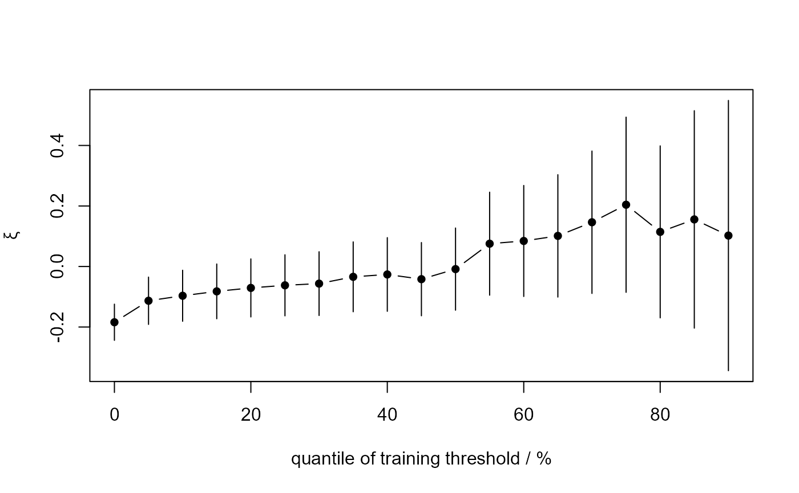

Uses maximum likelihood estimation to fit a Generalized Pareto (GP)
model to threshold excesses over a range of thresholds.
The threshold excesses are treated as independent and identically
distributed (i.i.d.) observations.
The resulting estimates and confidence intervals can be plotted,
using plot.stability,
to produce a crude graphical diagnostic for threshold choice.
stability(
data,
u_vec,
prof = FALSE,
conf = 95,
mult = 1:2,
plot_prof = FALSE,
...
)Arguments
- data
A numeric vector of observations.
- u_vec
A numeric vector of thresholds to be applied to the data. Any duplicated values will be removed. These could be set at sample quantiles of
datausingquantile.- prof
A logical scalar. Whether to calculate confidence intervals for the GP shape parameter \(\xi\) based on the profile-likelihood for \(\xi\) or using the MLE plus or minus a multiple of the estimated standard error (SE) of the MLE. The intervals produced by the former may be better but they take longer to calculate. Default:
FALSE.- conf
A numeric scalar in (0, 100). Confidence level for the confidence intervals. Default: 95%.
- mult
A numeric vector of length 2. The range of values over which the profile log-likelihood for \(\xi\) is calculated is (MLE -
mult[1]c SE, MLE +mult[2]c SE), where MLE and SE are the MLE and estimated standard error of \(\xi\) and c is the constant for which this interval gives an approximate 100conf% level confidence interval for \(\xi\) whenmult = c(1, 1). The default,mult = c(1, 2), works well in most cases. If the routine fails because the range of \(\xi\) is not sufficiently wide then the relevant components ofmultshould be increased.- plot_prof
A logical scalar. Only relevant if
prof = TRUE. Ifplot_prof = TRUEthen the profile log-likelihood is plotted for each threshold. IfFALSEthen nothing is plotted.- ...
Further (optional) arguments to be passed to the
optimfunction for the optimizations on which the profile-likelihood for \(xi\) is based.
Value
An object (list) of class "stability" with components:
- ests
MLEs of the GP shape parameter \(\xi\).
- ses
Estimated SEs of the MLEs of \(\xi\).
- lower
Lower limit of 100
conf% confidence intervals for \(\xi\).- upper
Upper limit of 100
conf% confidence intervals for \(\xi\).- nexc
The number of threshold excesses.
- u_vec
The thresholds supplied by the user.
- u_ps
The approximate sample quantiles to which the thresholds in
u_veccorrespond.- data
The input
data.- conf
The input
conf.
Each of these components is a numeric vector of length
length(u_vec).
Details
For each threshold in u_vec a GP model is fitted by maximum
likelihood estimation to the threshold excesses, i.e. the amounts
by which the data exceed that threshold. The MLEs of the GP shape
parameter \(\xi\) and approximate conf% confidence intervals
for \(\xi\) are stored for plotting (by plot.stability)
to produce a simple graphical diagnostic to inform threshold selection.
This plot is used to choose a threshold above which the underlying GP
shape parameter may be approximately constant. See Chapter 4 of
Coles (2001). See also the vignette "Introducing threshr".
References
Coles, S. G. (2001) An Introduction to Statistical Modeling of Extreme Values, Springer-Verlag, London. doi:10.1007/978-1-4471-3675-0_3
See also
ithresh for threshold selection in the i.i.d. case
based on leave-one-out cross-validation.
plot.stability for the S3 plot method for
objects of class stability.
Examples
# Set a vector of thresholds
u_vec_gom <- quantile(gom, probs = seq(0, 0.9, by = 0.05))
# Symmetric confidence intervals
gom_stab <- stability(data = gom, u_vec = u_vec_gom)
plot(gom_stab)

# Profile-likelihood-based confidence intervals
gom_stab <- stability(data = gom, u_vec = u_vec_gom, prof = TRUE)
#> Fitting at threshold number ...
#> 1 2 3 4 5 6 7 8 9 10 11 12 13 14 15 16 17 18 19
plot(gom_stab)